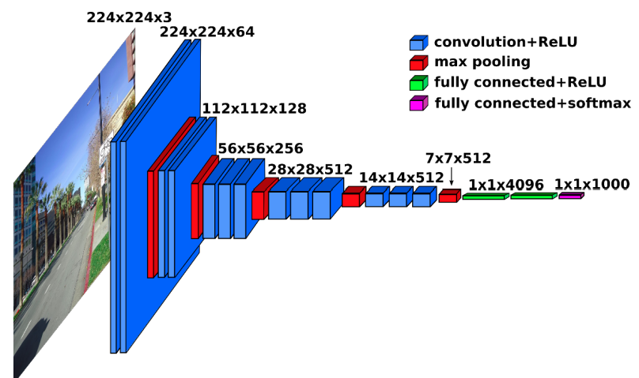
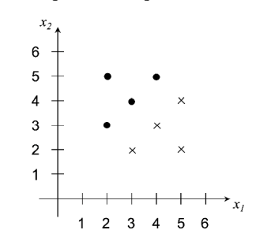
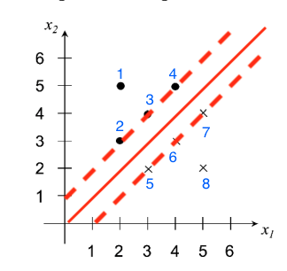
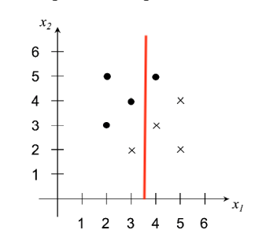
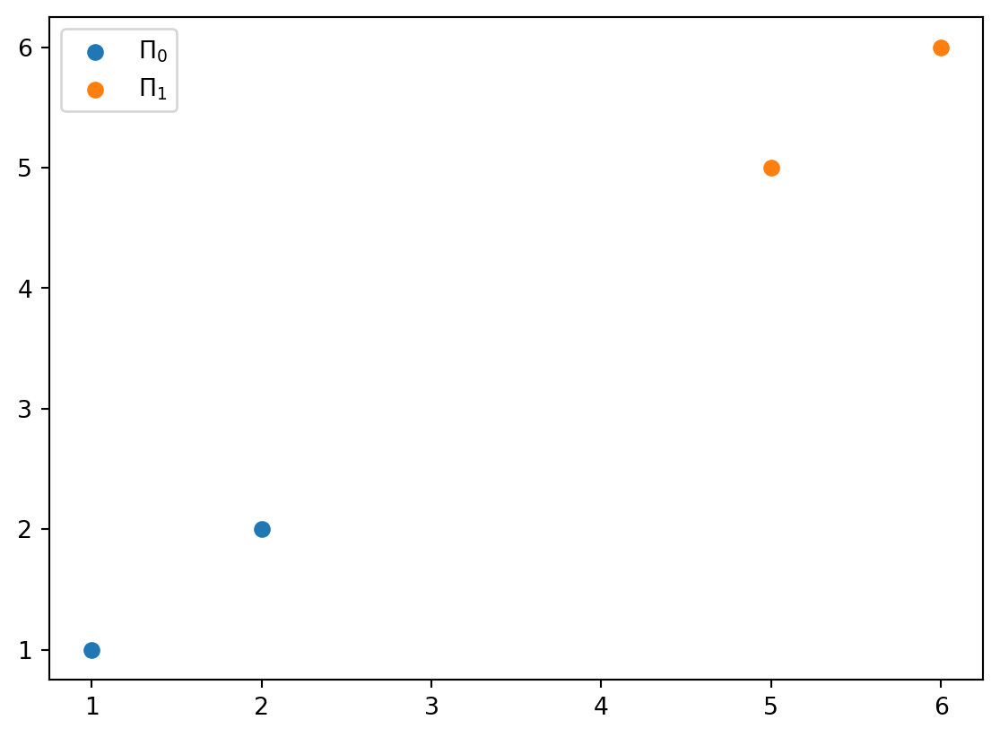

import numpy as np
import tensorflow as tf
import matplotlib.pyplot as plt
import sys9 Homework 4
9.1 Homework Description
- Course: ECEN649, Fall2022
- Deadline: 2022/11/16, 11:59 pm
Problems from the Book
6.3
6.5
6.7
7.1
7.10
6.12 (coding assignment)
Problems 6.3-6.5 are worth 10 points each, Problem 7.10 and the coding assignment are worth 20 points each.
9.2 Computational Environment
9.2.1 Libraries
9.2.2 Versions
print(np.__version__)
print(tf.__version__)
print (sys.version)
print(sys.executable)1.23.4
2.10.0
3.9.12 (main, Apr 5 2022, 01:52:34)
[Clang 12.0.0 ]
/Users/stevenchiu/miniconda/bin/python9.3 Problem 6.3
Show that the decision regions produced by a neural network with \(k\) threshold sigmoids in the first hidden layer, no matter what nonlinearities are used in succeeding layers, are equal to the intersection of \(k\) half-spaces, i.e., the decision boundary is piecewise linear
Hint: All neurons in the first hidden layer are perceptrons and the output of the layer is a binary vector.
Let \(\bar{O}\) be the \(k\) output of first hidden layer, and there are \(2^k\) types of binary vectors \([O_1, \dots, O_k]\). Therefore, before the next layer, the input is determinstic in \(2^k\) combination in \(R^k\) space.
For each data point \(x\in R^d\) where \(d\) is the feature space. the output of first layer is
\[O(x)_{i} = I_{g_{i}(x)}(x), \quad i = 1,\cdots, k \tag{9.1}\]
where \(g_{i}(\cdot)\) is the perceptron function of neuron \(i\). Thus, any point \(x\) belong to one type of \([I_{g_{1}(x)}(x), \dots, I_{g_{k}(x)}(x)]\). For each \(O_i\), the space forms a half-space with \(\{x: g_i(x) > 0\}\), and there are \(k\) half space in total.
9.4 Problem 6.5
For the VGG16 CNN architecture:

9.4.1 (a)
Determine the number of filters used in each convolution layer.
Conv-1: 64 filters (pre-depth: 3)Conv-2: 128 filters (pre-depth: 64)Conv-3: 256 filters (pre-depth: 128)Conv-4: 512 filters (pre-depth: 256)Conv-5: 512 filters (pre-depth: 512)
There are total
rs = np.array([3, 64, 128, 256, 512])
t_filters = np.array([64, 128, 256, 512, 512])
np.sum(t_filters)1472filters.
9.4.2 (b)
Based on the fact that all filters are of size \(3\times 3\times r\), where \(r\) is the depth of the previous layer, determine the total number of convolution weights in the entire network.
CONV1 = (3*3*3)*64 + (3*3*64)*64
CONV138592CONV2 = (3*3*64)*128 + (3*3*128)*128
CONV2221184CONV3 = (3*3*128)*256 + (3*3*256)*256 + (3*3*256)*256
CONV31474560CONV4 = (3*3*256)*512 + (3*3*512)*512 + (3*3*512)*512
CONV45898240CONV5 = (3*3*512)*512 *3
CONV57077888fc1 = 512 * 7 * 7 * 4096
fc1102760448fc2 = 4096 * 4096
fc216777216fc3 = 4096 * 1000
fc340960009.4.3 (c)
Add the weights used in the fully-connected layers to obtain the total number of weights used by VGG16.
Total of weights
total = np.sum([CONV1, CONV2, CONV3, CONV4, CONV5, fc1, fc2, fc3])
total 1383441289.5 Problem 6.7
Consider the training data set given in the figure below.

9.5.1 (a)
By inspection, find the coefficients of the linear SVM hyperplane \(a_1 x_1 + a_2 x_2 + a_0 = 0\) and plot it. What is the value of the margin? Say as much as you can about the values of the Lagrange multipliers associated with each of the points.

The boundary passes by \(\frac{1}{2}((3,3) + (3,2)) = (3, 2.5)\) and \(\frac{1}{2} ((3,4) + (4,3))=(3.5, 3.5)\)
\(a_1 = 2.5 - 3.5 = -1\)
\(a_2 = 3.5 - 3 = 0.5\)
\(a_0 = 3\cdot 3.5 - 3.5 \cdot 2.5 = 1.75\)
The boundary is \[-x_1 + 0.5 x_2 + 1.75 = 0\]
In Figure 9.2, there are \(6\) support vectors that are \(\lambda_2\) to \(\lambda_7\). The KKT conditions1 state that
\[\begin{align} \lambda_i = 0 &\Rightarrow y_i E_i \leq 0\\ 0 < \lambda_i < C &\Rightarrow y_i E_i = 0\\ \lambda_i = C &\Rightarrow y_i E_i \geq 0 \end{align}\]
- Lagrange multipliers
- \(\lambda_1 = 0\)
- \(\lambda_2 \in (0, C)\)
- \(\lambda_3 \in (0, C)\)
- \(\lambda_4 \in (0, C)\)
- \(\lambda_5 \in (0, C)\)
- \(\lambda_6 \in (0, C)\)
- \(\lambda_7 \in (0, C)\)
- \(\lambda_8 = 0\)
where \(C\) is the pentalty term.
9.5.2 (b)
Apply the CART rule, using the misclassification impurity, and stop after finding one splitting node (this is the “1R” or “stump” rule). If ther eis a tie between best splits, pick one that makes at most one error in each class. Plot this classifier as a decision boundary superimposed on the training data and also as a binary decision tree showing the splitting and leaf nodes.

flowchart TD A[x1 <= 3.5] A --> |yes| D[1] A --> |no| E[0]
where \(\bullet\) labelled as \(1\); \(\circ\) labelled as \(0\).
9.5.3 (c)
How do you compare the classifiers in (a) and (b) ? Which one is more likely to have a smaller classification error in this problem?
- SVM of (a) yields smaller classification error than (b) because it allow any slope of decision boundary.
9.6 Problem 7.1
Suppose that the classification error \(\epsilon_n\) and an error estimator \(\hat{\epsilon}_n\) are jointly Gaussian, such \[\epsilon_n \sim N(\epsilon^* + \frac{1}{n}, \frac{1}{n^2}), \hat{\epsilon}_n \sim N(\epsilon^* - \frac{1}{n}, \frac{1}{n^2}), Cov(\epsilon_n, \hat{\epsilon}_n) = \frac{1}{2n^2}\] where \(\epsilon^*\) is the Bayes error. Find the bias, deviation variance, RMS, correlation coefficient and tail probabilities \(P(\hat{\epsilon}_n - \epsilon_n < - \tau)\) and \(P(\hat{\epsilon}_n - \epsilon_n > \tau)\) of \(\hat{\epsilon}_n\). Is this estimator optimistically or pessimistically biased? Does performance improve as sample size increases? Is the estimator consistent?
9.6.1 Bias
Use Eq. 7.3 (Braga-Neto 2020, 154),
\[Bias(\hat{\epsilon}_n) = E[\hat{\epsilon}_n] - E[\epsilon_n]\]
- \(E[\hat{\epsilon}_n] = \epsilon^{*} - \frac{1}{n}\)
- \(E[\epsilon_n] = \epsilon^* + \frac{1}{n}\)
Thus,
\[Bias(\hat{\epsilon}_n) = \frac{-2}{n} < 0\]
This estimator is optimisitcally biased.
9.6.2 Deviation variance
Use Eq. 7.4 (Braga-Neto 2020, 154),
\[Var_{dev}(\hat{\epsilon}_n) = Var(\hat{\epsilon}_n, \epsilon_n) = Var(\hat{\epsilon}_n) + Var(\epsilon_n) - 2 Cov(\epsilon_n, \hat{\epsilon}_n)\]
- \(Var(\hat{\epsilon}_n) = \frac{1}{n^2}\)
- \(Var(\epsilon_n) = \frac{1}{n^2}\)
- \(Cov(\epsilon_n, \hat{\epsilon}_n) = \frac{1}{2n^2}\)
Thus,
\[Var_{dev}(\hat{\epsilon}_n) = \frac{1}{n^2} + \frac{1}{n^2} - 2\frac{1}{2n^2} = \frac{1}{n^2}\]
The deviation variance reduces as sample size increases.
9.6.3 Root mean-square error
Use Eq. 7.5 (Braga-Neto 2020, 154),
\[RMS(\hat{\epsilon}_n) = \sqrt{E[(\hat{\epsilon}_n - \epsilon_n)^2]} = \sqrt{Bias(\hat{\epsilon}_n)^2 + Var_{dev}(\hat{\epsilon}_n)}\]
Apply previous results,
\[RMS(\hat{\epsilon}_n) = \sqrt{\frac{4}{n^2} + \frac{1}{n^2}} = \frac{\sqrt{5}}{n}\]
9.6.4 Correlation coefficient
Use the pearson correlation coefficient2
\[\rho_{X,Y} = \frac{Cov(X,Y)}{\sigma_X \sigma_Y}\]
- \(Cov(\epsilon_n, \hat{\epsilon}_n) = \frac{1}{2n^2}\)
- \(\sigma_{\epsilon_n} = \frac{1}{n}\)
- \(\sigma_{\hat{\epsilon}_n} = \frac{1}{n}\)
\[\rho_{\epsilon_n, \hat{\epsilon}_n} =\frac{1}{2}\]
Correlation coefficient is a constant and independent from sample size.
9.6.5 Tail probabilities
Use Eq. 7.6 (Braga-Neto 2020, 154),
\[P(|\hat{\epsilon}_n - \epsilon_n| \geq \tau) = P(\hat{\epsilon}_n - \epsilon_n \geq \tau) + P(\hat{\epsilon}_n - \epsilon_n \leq -\tau), \quad \text{for } \tau > 0\]
The normal difference distribution3 of \(\hat{\epsilon}_n - \epsilon_n\)
\[\hat{\epsilon}_n - \epsilon_n \sim N(\frac{-2}{n}, \frac{2}{n^2}) = N(\mu, \sigma^2)\]
That \(\Delta\epsilon_n = \hat{\epsilon}_n - \epsilon_n\)
\[\begin{align} P(\Delta\epsilon_n \leq -\tau)% &= P(\frac{\Delta\epsilon_n - \mu}{\sigma} \leq \frac{-\tau - \mu}{\sigma})\\ &= \Phi(\frac{-\tau - \mu}{\sigma})\\ &= \Phi(\frac{-\tau + 2/n}{\sqrt{2}/n})\\ &= \Phi(\frac{-n\tau + 2}{\sqrt{2}})\\ \end{align}\]
\[\begin{align} P(\Delta\epsilon_n \geq \tau)% &= P(\frac{\Delta\epsilon_n - \mu}{\sigma} \geq \frac{\tau - \mu}{\sigma})\\ &= 1 - P(\frac{\Delta\epsilon_n - \mu}{\sigma} < \frac{\tau - \mu}{\sigma})\\ &= 1 - \Phi(\frac{\tau - \mu}{\sigma})\\ &= 1 - \Phi(\frac{n\tau - 2}{\sqrt{2}}) \end{align}\]
Thus, when \(n\to \infty\)
\[\begin{align} \lim_{n\to \infty} P(\Delta\epsilon_n \leq -\tau) = 0\\ \lim_{n\to \infty} P(\Delta\epsilon_n \geq \tau) = 0 \end{align}\]
This can be conluced to \[\lim_{n\to \infty} P(|\hat{\epsilon}_n - \epsilon_n| \geq \tau) = 0\]
The estimator is consistent.
9.7 Problem 7.10
This problem illustrates the very poor (even paradoxical) performance of cross-validation with very small sample sizes. Consider the resubstitution and leave-one-out estimators \(\hat{\epsilon}^{r}_{n}\) and \(\hat{\epsilon}^{l}_n\) for the 3NN classification rule, with a sample of size \(n=4\) from a mixture of two equally-likely Gaussian populations \(\Pi_0 \sim N_d(\mu_0, \Sigma)\) and \(\Pi_1 \sim N_d(\mu_1, \Sigma)\). Assume that \(\mu_0\) and \(\mu_1\) are far enough apart to make \(\delta = \sqrt{(\mu_1 - \mu_0)^T \Sigma^{-1} (\mu_1 = \mu_0)}\gg 0\) (in which case the Bayes error is \(\epsilon_{\text{bay}} = \Phi(-\frac{\delta}{2})\approx 0\)).
9.7.1 (a)
For a sample \(S_n\) with \(N_0 = N_1 = 2\), which occurs \(P(N_0 = 2) = {4\choose 2}2^{-4} = 37.5\%\) of the time, show that \(\epsilon_n \approx 0\) but \(\hat{\epsilon}^{l}_{n}=1\)
If \(N_0=N_1=2\), the leave-one-out method removes one of the data point. The remaining points will have the majority label and have opposite label to the removed point (Figure 9.4). This flipping causes \(\hat{\epsilon}^l = 1\).
Since two Gaussian population are far away from each other. The decidsion boundary is in the middle of two means, and there is little overlap between two distribution. Thus, when \(\delta \gg 0\), \(\epsilon_n \approx 0\).

9.7.2 (b)
Show that \(E[\epsilon_n] \approx \frac{5}{16} = 0.3125\), but \(E[\hat{\epsilon}^{l}_{n}] = 0.5\), so that \(\text{Bias}(\hat{\epsilon}^{l}_{n}) \approx \frac{3}{16} = 0.1875\), and the leave-one-out estimator is far from unbiased.
Given two label have equal occurrences,
- \(P(N_0 = 0) = {4 \choose 0}2^{-4} = 1\cdot 2^{-4}\)
- \((N_0, N_1) = (0, 4)\)
- \(\epsilon_n = \frac{1}{2}\) (always predicting \(N_1\))
- \(\hat{\epsilon}_{n}^{l} = 0\)
- \(P(N_0 = 1) = {4 \choose 1}2^{-4} = 4\cdot 2^{-4}\)
- \((N_0, N_1) = (1, 3)\)
- \(\epsilon_n = \frac{1}{2}\)
- \(\hat{\epsilon}_{n}^{l} = \frac{1}{4}\)
- \(P(N_0 = 2) = {4 \choose 2}2^{-4} = 6\cdot 2^{-4}\)
- \((N_0, N_1) = (2, 2)\)
- \(\epsilon_n = 0\)
- \(\hat{\epsilon}_{n}^{l} = 1\) (flipped)
- \(P(N_0 = 3) = {4 \choose 3}2^{-4} = 4\cdot 2^{-4}\)
- \((N_0, N_1) = (3, 1)\)
- \(\epsilon_n = \frac{1}{2}\)
- \(\hat{\epsilon}_{n}^{l} = \frac{1}{4}\)
- \(P(N_0 = 4) = {4 \choose 4}2^{-4} = 1\cdot 2^{-4}\)
- \((N_0, N_1) = (4, 0)\)
- \(\epsilon_n = \frac{1}{2}\)
- \(\hat{\epsilon}_{n}^{l} = 0\)
\[E[\epsilon_n] = \frac{1}{2}\frac{1}{16} + \frac{1}{2}\frac{4}{16}+ 0 + \frac{1}{2}\frac{4}{16} + \frac{1}{2}\frac{1}{16}=\frac{5}{16} \]
\[E[\hat{\epsilon}_{n}^{l}] = 0 + \frac{1}{4}\frac{4}{16} + 1\frac{6}{16} + \frac{1}{4}\frac{4}{16} + 0 = \frac{8}{16} = \frac{1}{2}\]
9.7.3 (c)
Show that \(Var_d(\hat{\epsilon}^{l}_n) \approx \frac{103}{256} \approx 0.402\), which corresponds to a standard deviation of \(\sqrt{0.402} = 0.634\). The leave-one-out estimator is therefore highly-biased and highly-variable in this case.
\[\begin{align} Var_d(\hat{\epsilon}^{l}_n)% &= E[(\hat{\epsilon}^{l}_n - \epsilon_n)^2] - (E[\hat{\epsilon}^{l}_n - \epsilon_n])^2\\ &= (0 -\frac{1}{2})^2 \frac{1}{16} + (\frac{1}{4} - \frac{1}{2})^2 \frac{4}{16}\\ &+ (1-0)^2 \frac{6}{16} + (\frac{1}{2} - \frac{1}{4})^2 \frac{4}{16} + (0-\frac{1}{2})^2 \frac{1}{16} - (\frac{3}{16})^2\\ &= 2(\frac{1}{2})^2 \frac{1}{16} + 2(\frac{1}{4})^2 \frac{4}{16}+ \frac{6}{16} - (\frac{3}{16})^2\\ &= \frac{14}{32} - (\frac{3}{16})^2 = \frac{103}{256} \end{align}\]
9.7.4 (d)
Consider the correlation coefficient of an error estimator \(\hat{\epsilon}_n\) with the true error \(\epsilon_n\): \[\rho(\epsilon_n, \hat{\epsilon}_n) = \frac{Cov(\epsilon_n, \hat{\epsilon}_n)}{Std(\epsilon_n)Std(\hat{\epsilon}_n)}\] Show that \(\rho(\epsilon_n, \hat{\epsilon}^{l}_{n} \approx 0.98)\), i.e., the leave-one-out estimator is almost perfectly negatively correlated with the true error.
\[\begin{align} Var(\hat{\epsilon}_{n}^{l}) &= E[\epsilon^{2}_n] - E[\epsilon_n]^2\\ &= \frac{1}{16}\frac{4}{16} + \frac{6}{16} + \frac{1}{16}\frac{4}{16} = \frac{4 + 96 + 4}{256} - \frac{1}{4} = \frac{40}{256} = \frac{5}{32} \end{align}\]
\[\begin{align} Var(\epsilon_n)% &= E[(\hat{\epsilon}_{n}^{l})^2] - (E[\hat{\epsilon}_{n}^{l}])^2\\ &= \frac{1}{4}\frac{1}{16} + \frac{1}{4}\frac{4}{16}\\ &+ \frac{1}{4}\frac{4}{16} + \frac{1}{4}\frac{1}{16} - (\frac{5}{16})^2\\ &= \frac{10}{64} - \frac{25}{256} = \frac{15}{256} \end{align}\]
Use the previous results,
\[\begin{align} Cov(\epsilon_n, \hat{\epsilon}_{n}^{l})% &= E[\epsilon_n \hat{\epsilon}_{n}^{l}] - E[\epsilon_n ]E[\hat{\epsilon}_{n}^{l}]\\ &= (0 + \frac{1}{2}\frac{1}{4}\frac{4}{16} + 0 + \frac{1}{2}\frac{1}{4}\frac{4}{16}) - \frac{5}{16}\frac{1}{2}\\ &= \frac{1}{16} - \frac{5}{32} = \frac{-3}{32} \approx -0.98 \end{align}\]
We can derive the correlation coefficient:
\[\rho(\epsilon_n, \hat{\epsilon}_{n}^{l}) = \frac{-3/32}{\sqrt{\frac{5}{32}}\sqrt{\frac{15}{256}}}\]
9.7.5 (e)
For comparison, show that, although \(E[\hat{\epsilon}^{r}_{n}] = \frac{1}{8} = 0.125\), so that \(\text{Bias}(\hat{\epsilon}^{r}_{n}) \approx \frac{-3}{16} = -0.1875\), which is exactly the negative of the bias of leave-one-out, we have \(Var_d(\hat{\epsilon}^{r}_{n}) \approx \frac{7}{256} \approx 0.027\), for a standard deviation of \(\frac{\sqrt{7}}{16} \approx 0.165\), which is several times smaller than the leave-one-out variance, and \(\rho(\epsilon_n, \hat{\epsilon}^{r}_{n}) \approx \sqrt{\frac{3}{5}} \approx 0.775\), showing that the resubstitution estimator is highly positively correlated with the true error.
The resubstitution error estimator uses 3 nearest neighbors, and no point is removed:
- \(P(N_0 = 0) = {4 \choose 0}2^{-4} = 1\cdot 2^{-4}\)
- \((N_0, N_1) = (0, 4)\)
- \(\epsilon_n = \frac{1}{2}\)
- \(\hat{\epsilon}_{n}^{r} = 0\)
- \(P(N_0 = 1) = {4 \choose 1}2^{-4} = 4\cdot 2^{-4}\)
- \((N_0, N_1) = (1, 3)\)
- \(\epsilon_n = \frac{1}{2}\)
- \(\hat{\epsilon}_{n}^{r} = \frac{1}{4}\)
- \(P(N_0 = 2) = {4 \choose 2}2^{-4} = 6\cdot 2^{-4}\)
- \((N_0, N_1) = (2, 2)\)
- \(\epsilon_n = 0\)
- \(\hat{\epsilon}_{n}^{r} = 0\)
- \(P(N_0 = 3) = {4 \choose 3}2^{-4} = 4\cdot 2^{-4}\)
- \((N_0, N_1) = (3, 1)\)
- \(\epsilon_n = \frac{1}{2}\)
- \(\hat{\epsilon}_{n}^{r} = \frac{1}{4}\)
- \(P(N_0 = 4) = {4 \choose 4}2^{-4} = 1\cdot 2^{-4}\)
- \((N_0, N_1) = (4, 0)\)
- \(\epsilon_n = \frac{1}{2}\)
- \(\hat{\epsilon}_{n}^{r} = 0\)
The resubstitution estimator is positively correlated with the true error.